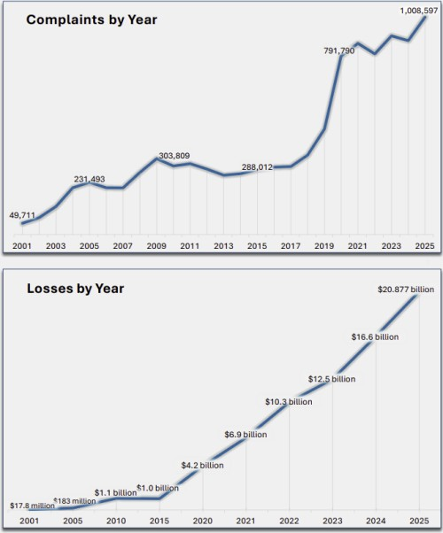

Scams are deceptive attempts to steal money or personal information by manipulating trust, fear, or urgency. They can arrive directly to you through call, email, text, or social media, or hide behind an innocuous website link. They often impersonate a person or organisation you know and trust.
With AI, scams are only getting more sophisticated, so it’s important to know how to recognise and stop them.
AI-generated content, including convincing deepfakes, can make scams harder to detect.
Scammers use scare tactics to create a sense of urgency and pressure people into making unwise decisions.
Double-check text in a suspicious message.
Bottom line: if something seems “too good to be true,” it usually is. Promises of large sums of money by phone or email are often scams.